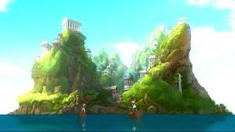

Batman
Batman ou Homem-Morcego é um super-herói de quadrinhos publicados pela DC Comics. Criado pelo desenhista Bob Kane e pelo escritor Bill Finger, apareceu pela primeira vez na revista Detective Comics (maio de 1939). Originalmente com o nome "o Bat-Man".
Ver mais


Arlequina
Arlequina é uma personagem fictícia criada pelos americanos Paul Dini e Bruce Timm para a DC Comics. Quinn fez sua estréia no vigésimo segundo episódio de Batman: The Animated Series, "The Joker's Favor", em setembro de 1992 e se tornou uma vilã recorrente na série.
Ver mais

Mulher Maravilha
Membro real da sociedade de Themysira, teve treinamento rígido pela General Philippus. Seu principal parceiro e interesse amoroso é Capitão Steve Trevor, suas parceiras mirins de equipe são conhecidas como Garotas Maravilhas, suas principais apoiadoras são membros da sororidade Garotas Holliday.
Ver mais
Super Homem
Clark Kent, identidade secreta do Super-Homem.É um dos mais importantes personagens da cultura pop ocidental, sendo o primeiro herói dos quadrinhos a ter uma revista intitulada com seu nome: Superman #1. Superman foi licenciado e adaptado para diversas mídias, desde rádio até televisão e cinema.
Ver mais